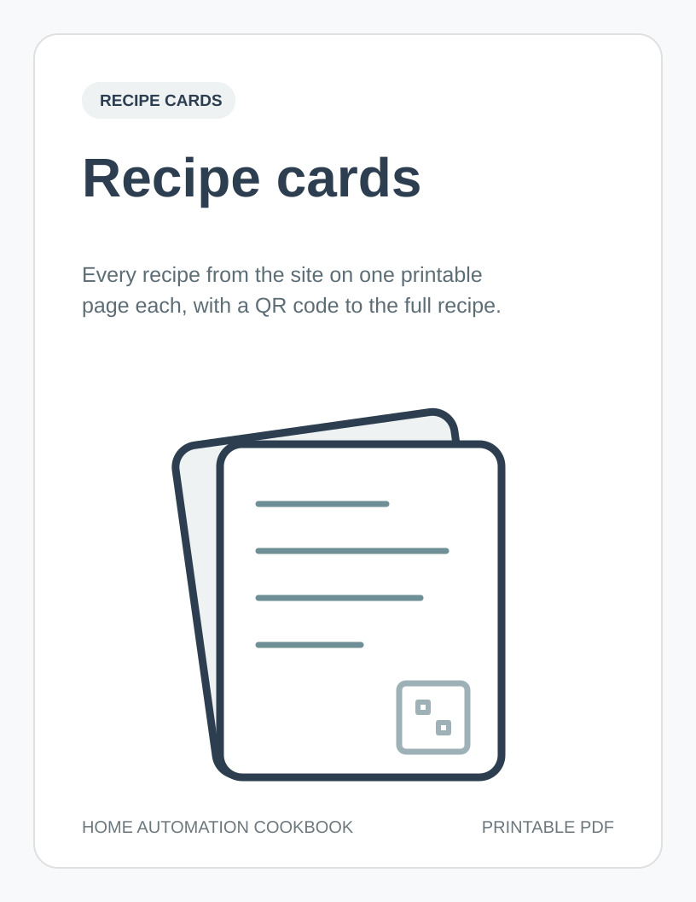

Recipe cards
Each page is a short version of one web recipe. Page numbers are printed at the bottom of every page.
When is the trigger. Only if lists the conditions. Do is the action. Stop is what ends it.
Scan the QR code, or type the short link, for the full recipe with setup notes, failure modes, and device options.
Devices are examples of what fits the job, not requirements. Any device that does the same job and works with your hub is fine. Local options like Z-Wave, Zigbee, Matter over Thread, and HomeKit keep working when the internet is down.
Test every rule before you rely on it. Safety devices such as smoke, CO, and leak alarms must keep working without automation.